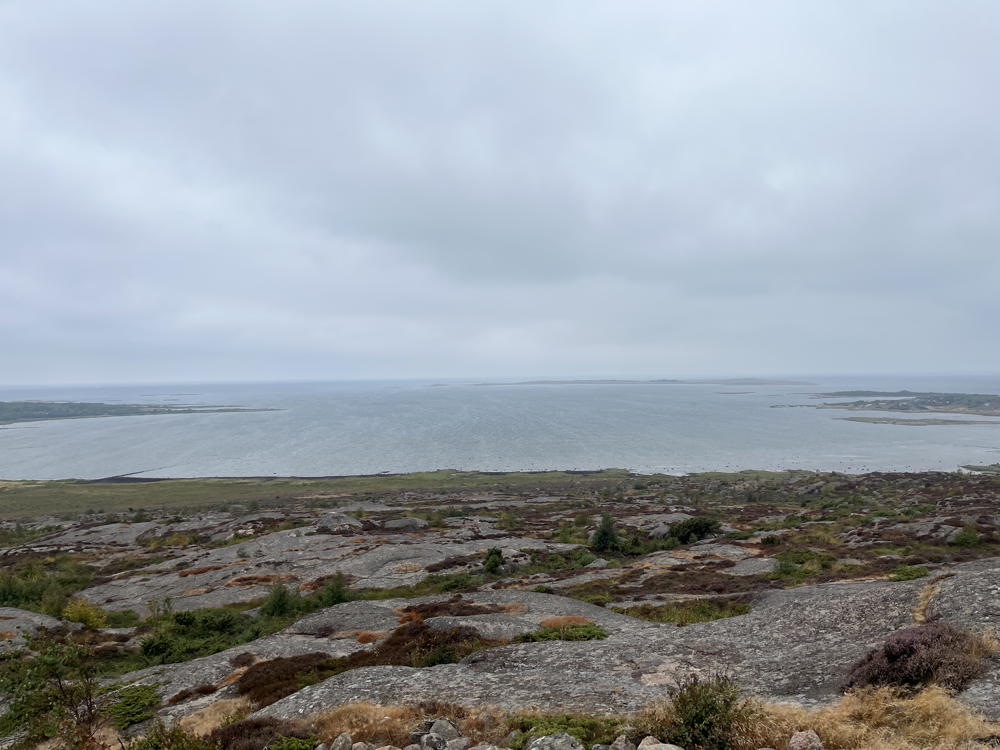
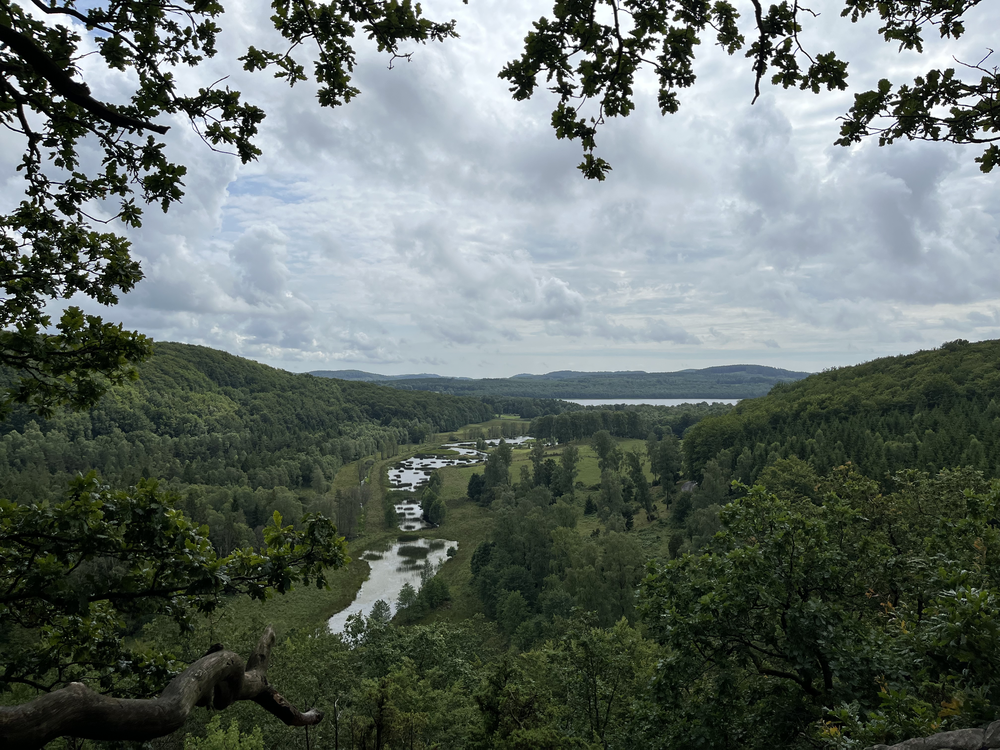
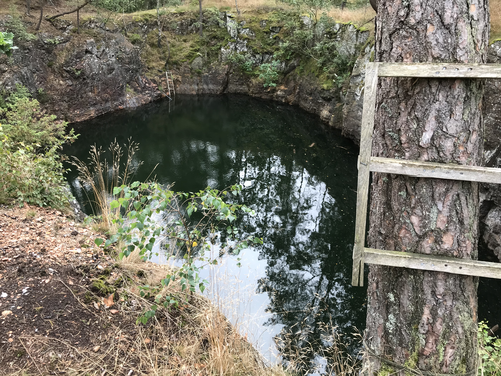
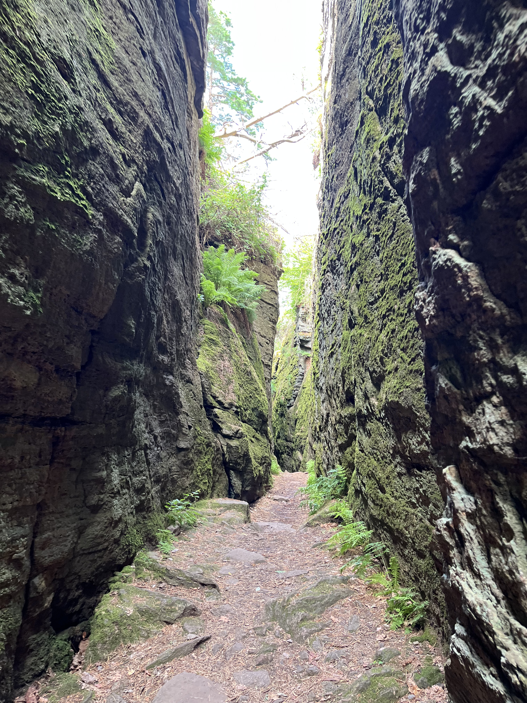
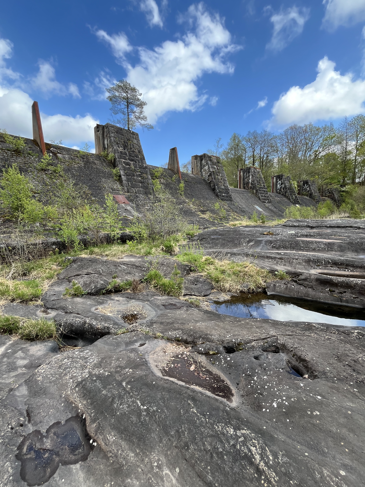

Gamla Varberg är en av de vackraste platserna i området och erbjuder en unik blandning av historia och natur.
Välkommen till naturen i Varberg! Här hittar du en översikt över de vackraste platserna i området.

Gamla Varberg är en av de vackraste platserna i området och erbjuder en unik blandning av historia och natur.
Varbergs Fästning är en av de mest imponerande fortifikationerna i Sverige och har en lång och spännande historia.

Åkulla Bokskogar är ett 50 kvadratkilometer stort naturområde som till stor del består av privatägd skog, ett 20-tal sjöar och 13 naturreservat, alla med en unik artrikedom.

Skvaltkvarnar i Veddige är en av de mest imponerande vattenkraftverken i Sverige och har en lång och spännande historia.

Derome Gruva är en av de mest imponerande gruvorna i området och har en lång och spännande historia.

Borrås skåra är en dramatisk, 10 meter djup och 100 meter lång klyfta i berget strax utanför Varberg. Troligen skapades den av strömmande vatten från inlandsisen, som också släpade med sig det lösa stenblock som ligger fastkilat i ena änden. Borrås skåra har länge varit sägenomspunnen bland traktens invånare.

Döda fallet (Yngeredsforsen) är en av de mest imponerande vattenfallen i Sverige och har en lång och spännande historia.